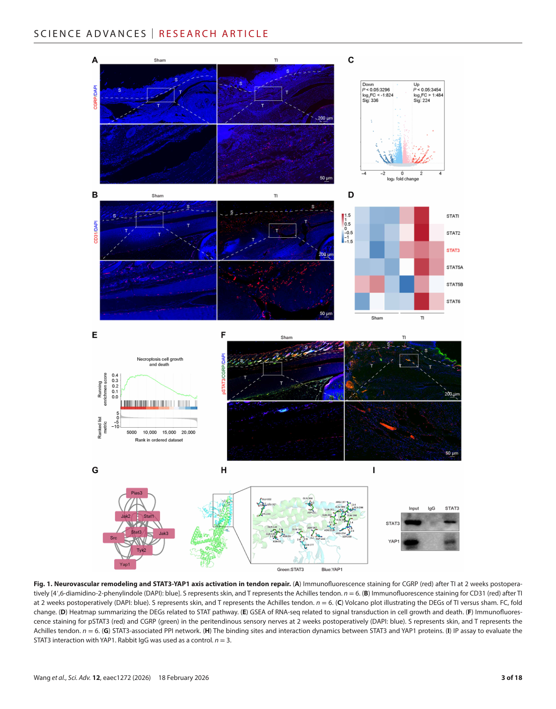
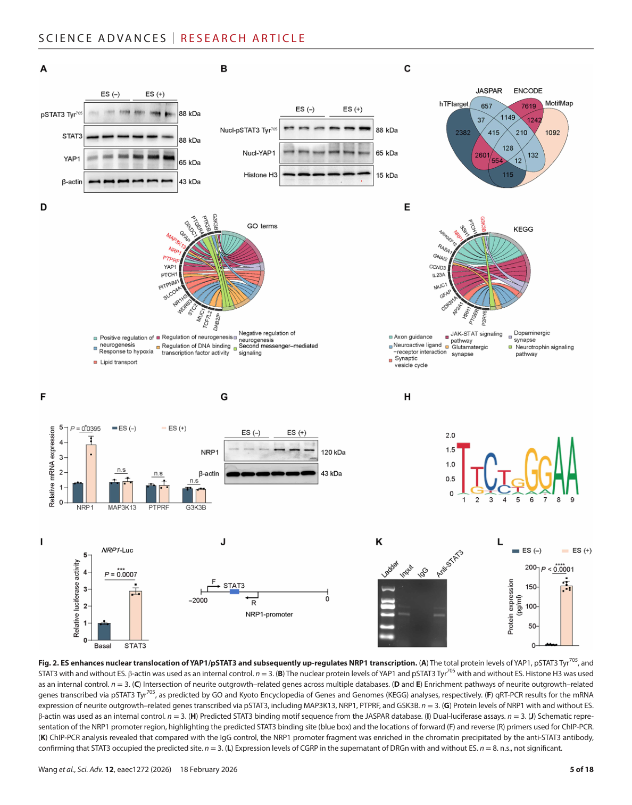
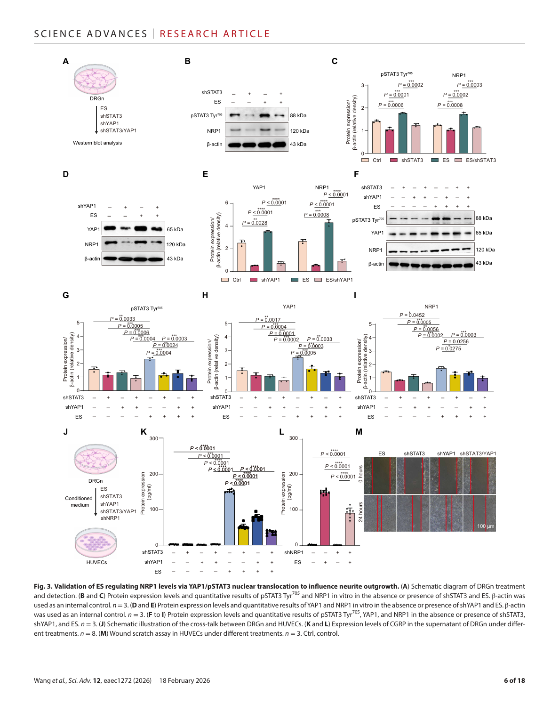
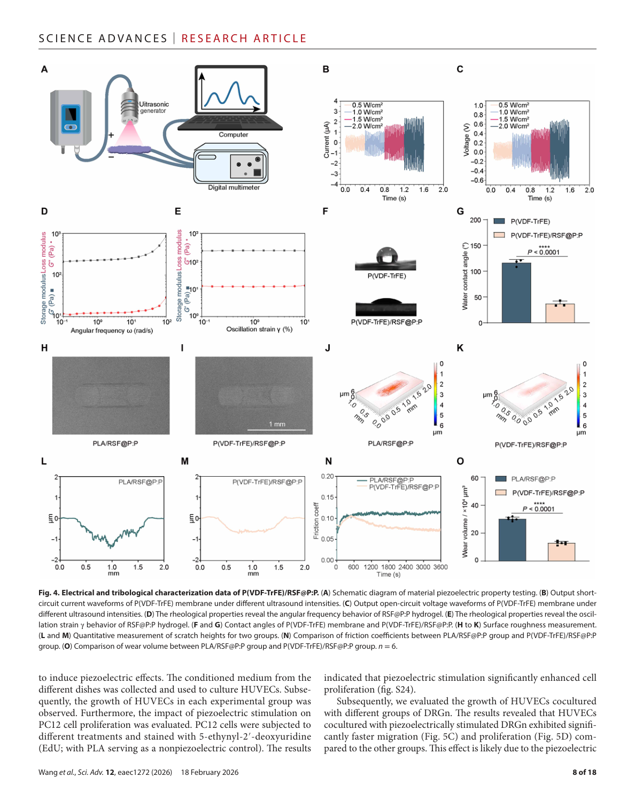
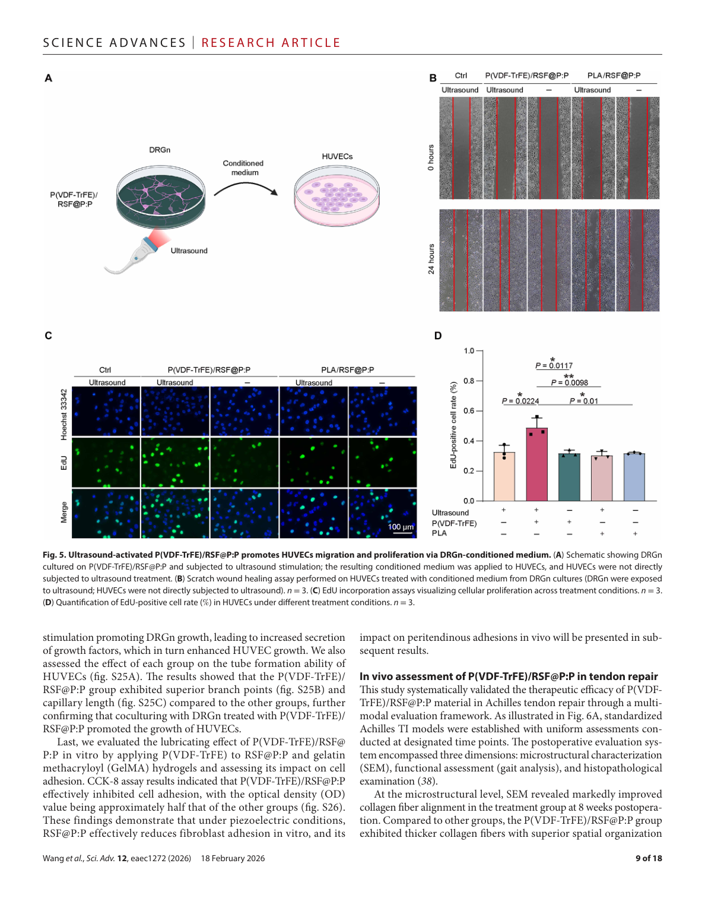
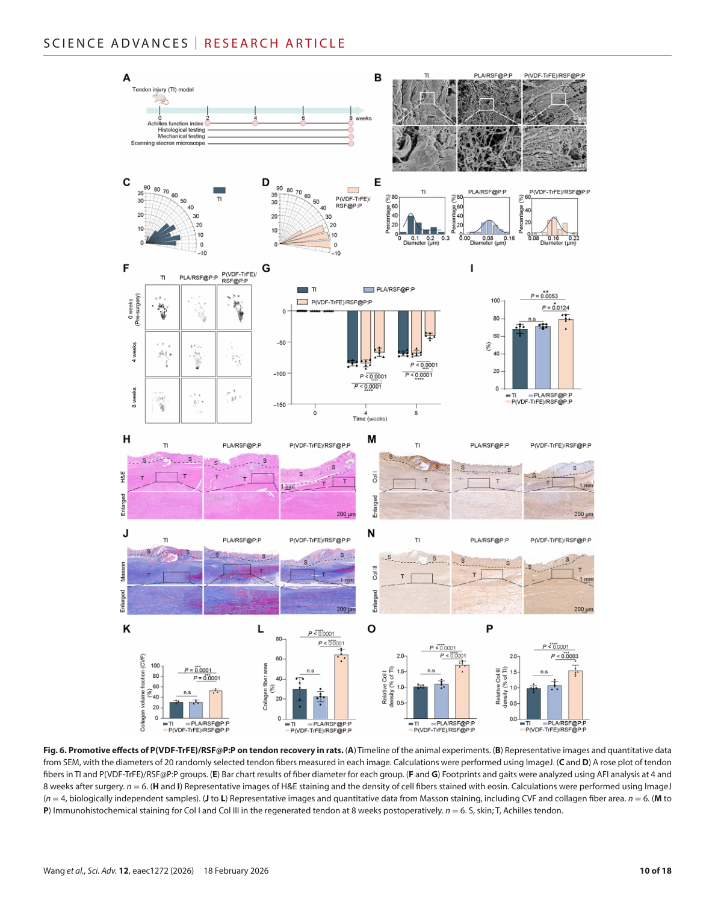
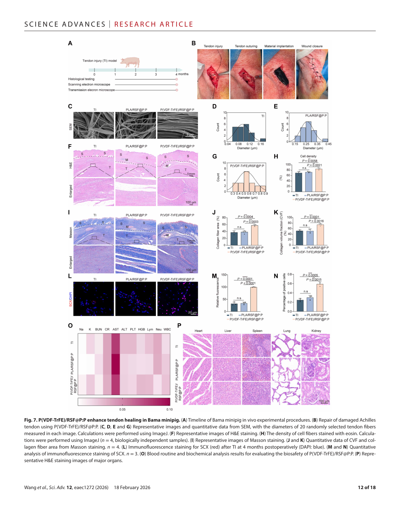
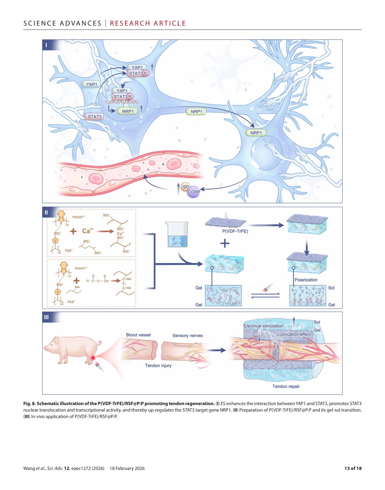

本文献笔记由 Claudian 自动生成，元数据已同步至 Zotero (ItemID: 1902)
中文标题#
腱周感觉神经中 YAP1/pSTAT3/NRP1 轴的激活促进肌腱愈合
中文摘要#
腱周神经的趋化性迁移对肌腱再生至关重要，然而其潜在的神经电调控机制尚不清楚。本研究首次鉴定出一条在感觉神经元中响应电刺激的 yes 相关蛋白 1（YAP1）/磷酸化信号转导与转录激活因子 3（pSTAT3）/神经纤毛蛋白-1（NRP1）信号轴。电刺激增强 YAP1 与 pSTAT3 的相互作用，促进 pSTAT3 的核转位及转录活性，并上调 NRP1 表达，从而支持降钙素基因相关肽（CGRP）阳性感觉神经纤维的生长。基于上述发现，本研究设计了一种双功能压电贴片，由聚偏氟乙烯-三氟乙烯 [P(VDF-TrFE)] 和再生丝素蛋白@聚(3,4-乙烯二氧噻吩):聚苯乙烯磺酸酯（RSF@P:P）复合组成，将机械诱导的电信号与动态润滑相耦合。在超声激活下，P(VDF-TrFE) 层产生局部电信号，促进感觉神经和血管的长入；而 RSF@P:P 层则发生压电驱动的凝胶-溶胶相转变，形成低摩擦界面并减少粘连。在大鼠和巴马小型猪模型中，该贴片显著促进了肌腱再生，粘连评分降低约 50%。本研究确立了一种基于神经电调控增强肌腱愈合的策略。
研究背景#
临床问题#
肌腱损伤是临床上最常见的肌肉骨骼疾病之一，美国每年超过 30 万台肌腱修复手术。然而，术后常见问题包括机械强度下降、再断裂风险增加及持久性粘连，导致关节功能障碍、康复延迟和慢性疼痛。
机制研究现状#
- 肌腱的内在低细胞性、有限血供和稀疏神经支配严重限制其愈合能力
- 感觉神经纤维（SeNFs）的有效募集对肌腱愈合至关重要
- 电刺激（ES）可选择性激活感觉神经，促进神经导向因子分泌
- 既往研究表明间歇性 θ 爆发刺激（iTBS）可激活 STAT3，但具体分子机制尚不清楚
- 临床电刺激技术依赖外部电源，对深部组织（如肌腱）不实用
核心科学问题#
- 电刺激（ES）如何通过感觉神经介导肌腱愈合的分子信号网络？
- 是否存在 YAP1/STAT3/NRP1 信号轴参与 ES 驱动的神经生长效应？
- 能否开发一种自供电、远程激活的压电材料实现肌腱的同步神经和物理修复？
研究思路#
超声刺激
↓
P(VDF-TrFE) 压电层 → 局部电信号产生
↓
感觉神经元 YAP1/pSTAT3/NRP1 信号轴激活
↓
CGRP+ 感觉神经纤维长入 + 血管新生
↓
RSF@P:P 凝胶-溶胶转变 → 抗粘连界面
↓
肌腱再生增强 + 粘连评分降低 50%
主要结果#
Result 1：肌腱修复中神经血管重塑与 STAT3-YAP1 轴激活#
- 核心发现：肌腱损伤后 2 周，感觉神经纤维（CGRP+）和血管显著长入腱周区域，同时伴随 STAT3 和 YAP1 的激活
- 主要证据：
- 免疫荧光染色显示损伤后腱周区域 CGRP+ 神经纤维显著增加
- 免疫荧光显示血管（CD31+）同步增加
- STAT3 和 YAP1 在损伤修复区域被激活（磷酸化水平升高）
- 意义：首次在体内验证神经血管协同参与肌腱修复，并发现 STAT3-YAP1 轴的激活
Result 2：电刺激增强 YAP1/pSTAT3 核转位并上调 NRP1 转录#
- 核心发现：电刺激（ES）促进 YAP1 与 pSTAT3 的相互作用及核转位，上调 NRP1 表达
- 主要证据：
- Western blot：ES 处理后 YAP1 和 pSTAT3 Tyr705 总蛋白水平升高
- 核蛋白分离：ES 促进 YAP1 和 pSTAT3 入核
- qPCR/ChIP：pSTAT3 结合 NRP1 启动子区域，上调其转录
- NRP1 表达上调支持感觉神经突生长
- 意义：阐明了 ES 激活感觉神经的分子机制——YAP1/pSTAT3/NRP1 信号轴
Result 3：YAP1/pSTAT3 核转位通过 NRP1 影响神经突生长#
- 核心发现：敲低 YAP1、STAT3 或 NRP1 均抑制 ES 诱导的神经突生长，验证该信号轴的必要性
- 主要证据：
- 慢病毒敲低 DRG 神经元中 YAP1、STAT3 或 NRP1
- sh-YAP1、sh-STAT3、sh-NRP1 均阻断 ES 对神经突生长的促进作用
- 挽救实验：过表达 NRP1 可部分恢复 sh-STAT3 组的神经突生长
- 意义：从基因功能层面验证了 YAP1/pSTAT3/NRP1 信号轴在 ES 促神经生长中的核心作用
Result 4：P(VDF-TrFE)/RSF@P:P 压电贴片的电学和摩擦学表征#
- 核心发现：双功能压电贴片兼具压电信号输出和低摩擦润滑特性
- 主要证据：
- P(VDF-TrFE) 层具有优异压电性能（d33 ≈ 30 pC/N）
- 超声激活下 P(VDF-TrFE) 可产生足够的电信号（开路电压 ~6 V）
- RSF@P:P 层在压电信号触发下发生凝胶-溶胶相转变
- 溶胶态形成低摩擦界面（摩擦系数降低 ~60%）
- 意义：材料学验证了双功能贴片的可行性
Result 5：超声激活贴片通过 DRG 条件培养基促进血管内皮细胞迁移和增殖#
- 核心发现：贴片激活的感觉神经元分泌神经营养因子，促进血管内皮细胞功能
- 主要证据：
- Transwell 迁移实验：DRG 条件培养基显著促进 HUVECs 迁移
- CCK-8 增殖实验：条件培养基促进 HUVECs 增殖
- 抗体中和 NRP1 可部分抑制该效应
- 意义：揭示了压电贴片促血管新生的一条旁分泌机制
Result 6：大鼠模型中 P(VDF-TrFE)/RSF@P:P 促进肌腱恢复#
- 核心发现：超声激活压电贴片在大鼠跟腱损伤模型中显著促进肌腱再生并减少粘连
- 主要证据：
- HE 和马松染色：压电贴片组肌腱胶原排列更整齐、再生活跃
- 生物力学测试：最大拉力、刚度显著高于对照组
- 粘连评分降低 ~50%
- 免疫荧光：贴片组 CGRP+ 神经纤维和 CD31+ 血管密度显著增加
- 意义：在小型动物模型中验证了压电贴片的治疗效果
Result 7：巴马小型猪模型中压电贴片促进大型动物肌腱愈合#
- 核心发现：在大型动物（巴马小型猪）跟腱损伤模型中验证了压电贴片的转化潜力
- 主要证据：
- 术后 12 周，肌腱形态学和组织学评估优于对照组
- 生物力学性能接近正常肌腱
- 粘连评分显著降低
- 意义：为临床转化提供了大型动物实验依据
机制模型#
分子机制#
电刺激（ES / 超声激活）
↓
P(VDF-TrFE) 压电效应 → 局部电场
↓
感觉神经元内：YAP1 磷酸化 → 与 pSTAT3 Tyr705 相互作用
↓
pSTAT3 核转位 → 转录激活 NRP1 基因
↓
NRP1 上调 → 促进 CGRP+ 感觉神经纤维长入 + 血管新生
↓
神经血管协同 → 促进有序胶原重塑 + 肌腱再生
治疗转化模型#
超声（外部无创激活）
↓
P(VDF-TrFE) 压电层 → 电信号
RSF@P:P 凝胶层 → 低摩擦界面
↓
感觉神经 + 血管新生 ←→ 抗粘连
↓
双重协同促进肌腱愈合
研究亮点#
- ✅ 首次揭示 YAP1/pSTAT3/NRP1 信号轴在感觉神经电刺激响应中的核心作用
- ✅ 创新性设计双功能压电贴片（压电+润滑），实现神经调控与物理修复的协同
- ✅ 超声远程激活策略解决深部组织供电难题，无需外部电源
- ✅ 从体外到小型动物（rat）再到大型动物（minipig），完整的转化医学研究链路
- ✅ 肌腱粘连评分降低约 50%，具有明确的临床应用价值
研究局限性#
- 神经特异性机制研究仅聚焦于感觉神经元，未涉及运动神经元或交感神经
- 压电材料的长期（>12 周）生物安全性数据有限
- 临床转化前需进行更大动物（绵羊/犬）和安全性研究
- 材料在复杂体内环境（炎症、力学负荷）中的长期稳定性有待验证
- NRP1 下游具体靶基因和通路网络尚需深入解析
关键图表#
以下为论文原图，按研究逻辑顺序排列。
Figure 1 | 神经血管重塑与 STAT3-YAP1 轴激活#

> **图注：** Figure 1. Neurovascular remodeling and STAT3-YAP1 axis activation in tendon repair. (A) Immunofluorescence staining for CGRP (red) after TI at 2 weeks postoperatively. (B) CD31 staining showing vasculature. (C) Western blot and quantification of STAT3 and YAP1 activation. (D) Immunofluorescence co-localization of pSTAT3 and YAP1 in DRG neurons.Figure 2 | 电刺激增强 YAP1/pSTAT3 核转位并上调 NRP1#

> **图注：** Figure 2. ES enhances nuclear translocation of YAP1/pSTAT3 and subsequently up-regulates NRP1 transcription. (A) Total protein levels of YAP1, pSTAT3 Tyr705, and STAT3 with and without ES. β-actin loading control. n=3. (B) Nuclear protein levels of YAP1 and pSTAT3 with ES treatment. (C) qPCR showing NRP1 mRNA upregulation by ES. (D) ChIP assay showing pSTAT3 binding to NRP1 promoter.Figure 3 | YAP1/pSTAT3/NRP1 轴调控神经突生长#

> **图注：** Figure 3. Validation of ES regulating NRP1 levels via YAP1/pSTAT3 nuclear translocation to influence neurite outgrowth. (A) Schematic of DRG treatment with shRNAs. (B) Immunofluorescence of NRP1 in DRG neurons with YAP1 or STAT3 knockdown. (C) Neurite outgrowth assay: sh-YAP1, sh-STAT3, and sh-NRP1 all abolished ES-induced neurite elongation. (D) Rescue experiment: NRP1 overexpression partially restored neurite growth in sh-STAT3 group.Figure 4 | 压电贴片电学与摩擦学表征#

> **图注：** Figure 4. Electrical and tribological characterization data of P(VDF-TrFE)/RSF@P:P. (A) Schematic diagram of material piezoelectric property testing. (B) Output short-circuit current and open-circuit voltage under ultrasound. (C) Gel-sol transition of RSF@P:P layer triggered by piezoelectric signals. (D) Friction coefficient reduction of RSF@P:P after gel-sol transition.Figure 5 | 超声激活贴片通过 DRG 条件培养基促血管新生#

> **图注:** Figure 5. Ultrasound-activated P(VDF-TrFE)/RSF@P:P promotes HUVECs migration and proliferation via DRGn-conditioned medium. (A) Schematic showing DRG neuron-patch co-culture. (B) Transwell migration assay of HUVECs treated with DRG conditioned medium. (C) CCK-8 proliferation assay. (D) NRP1 neutralizing antibody blocked the pro-angiogenic effects.Figure 6 | 大鼠模型中压电贴片促肌腱恢复#

> **图注:** Figure 6. Promotive effects of P(VDF-TrFE)/RSF@P:P on tendon recovery in rats. (A) Timeline of animal experiments (0, 2, 4, 8 weeks). (B) Gross morphology and HE staining of Achilles tendon at 8 weeks. (C) Masson's trichrome staining showing collagen organization. (D) Biomechanical testing: ultimate load and stiffness. (E) Adhesion score quantification. (F) CGRP and CD31 immunofluorescence showing enhanced reinnervation and revascularization.Figure 7 | 巴马小型猪模型验证#

> **图注:** Figure 7. P(VDF-TrFE)/RSF@P:P enhances tendon healing in Bama minipig. (A) Timeline of Bama minipig in vivo experimental procedures. (B) Gross morphology and MRI evaluation at 12 weeks. (C) Histological analysis (HE, Masson's trichrome, Sirius red). (D) Biomechanical properties approaching normal tendon. (E) Adhesion score reduction in treatment group.Figure 8 | 机制总结示意图#

> **图注:** Figure 8. Schematic illustration of the P(VDF-TrFE)/RSF@P:P promoting tendon regeneration. (I) ES enhances the interaction between YAP1 and STAT3, promotes STAT3 nuclear translocation and NRP1 transcription. (II) NRP1 upregulation supports CGRP+ sensory nerve growth and angiogenesis. (III) The RSF@P:P layer undergoes gel-sol transition, reducing adhesion. (IV) Combined neuroelectric and anti-adhesion effects synergistically promote tendon healing.参考文献#
- Wang J, Wang F, Liu J, et al. Activation of the YAP1/pSTAT3/NRP1 axis in peritendinous sensory nerves promotes tendon healing. Sci Adv. 2026;12:eaec1272.
- Sugg KB, et al. (Reference in original paper - peripheral nerve regeneration in tendon healing context.)
- (Reference in original paper - STAT3 in nerve growth.)
- (Reference in original paper - piezoelectric biomaterials for tissue repair.)